第四章 基本平面图形（高效培优单元测试·强化卷）
第四章 基本平面图形（高效培优单元测试·强化卷）
（考试时间：120分钟 试卷满分：120分）
一、选择题（本大题共10小题，每小题3分，共30分）
1．下列四个图中，能用 三种表示方法表示同一个角的是（ ）
三种表示方法表示同一个角的是（ ）
A．
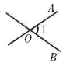
B．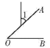
C． D．
D．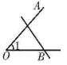
【答案】D
【分析】本题考查了角的概念，熟练掌握角的表示方法是解题的关键．
结合各选项中的图形，根据角的表示方法即可解答．
【详解】解：A、图中的 还可以用
还可以用 表示，不能用
表示，不能用 表示，不符合题意；
表示，不符合题意；
B、图中的不可以用和表示，不符合题意；
C、图中的不可以用和表示，不符合题意；
D、图中的可以用和表示，符合题意；
故选：D．
2．下列语句准确规范的是（ ）
A．直线 ，
， 相交于一点
相交于一点 B．延长直线
B．延长直线
C．延长射线 D．延长线段到点
D．延长线段到点 ，使
，使
【答案】D
【分析】本题主要考查几何语言的规范性，准确掌握规范的几何语言是学好几何的保障．
根据几何语言的规范对各选项分析判断后利用排除法求解．
【详解】解：A、交点应该用大写字母，故本选项错误，不符合题意；
B、直线是向两方无限延伸的，不能延长，故本选项错误，不符合题意；
C、射线向一个方向无限延伸，故延长射线 ，说法错误，不符合题意；
，说法错误，不符合题意；
D、延长线段到点，使，说法正确，符合题意．
故选：D．
3．已知
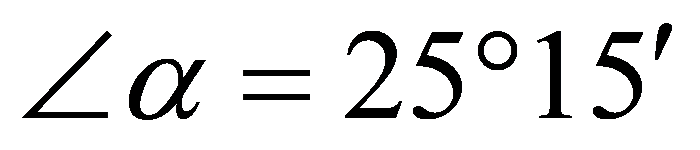
， ，则
，则 与
与 的大小关系是（ ）
的大小关系是（ ）A． B．
B．
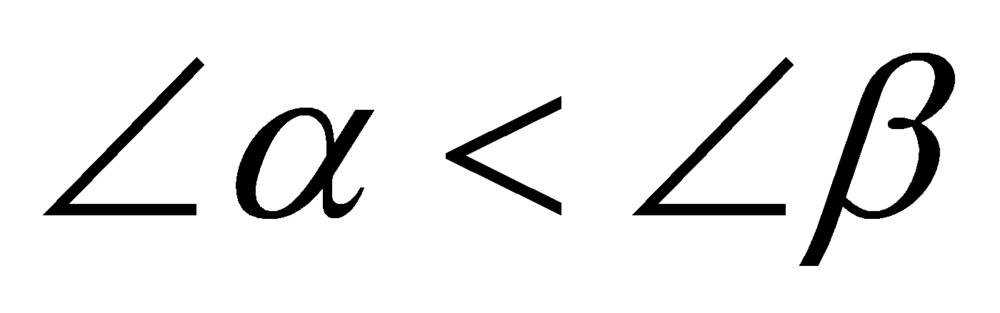
C． D．无法确定
D．无法确定【答案】A
【分析】本题主要考查了角的大小比较，度、分、秒的换算．首先根据 ，将转化为
，将转化为
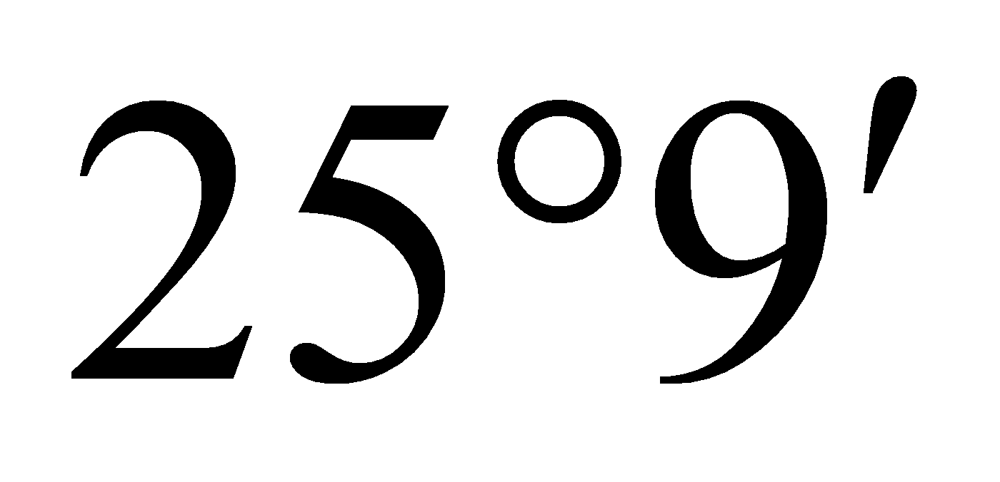
，再比较即可．【详解】解：∵
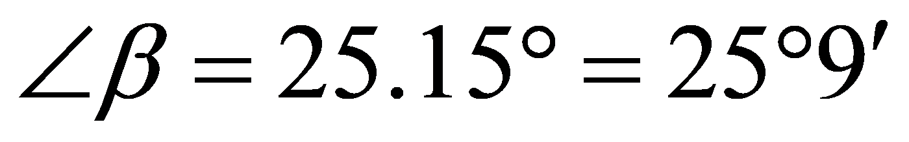
，，∴．
故选：A
4．下列说法正确的是（ ）
A．圆的周长都相等
B．圆上任意两点间的部分叫做圆弧
C．顶点在圆上的角叫做圆心角
D．由一条弧和经过这条弧的两个端点的两条线段组成的图形叫做扇形
【答案】B
【分析】本题考查了圆的概念理解，熟练掌握知识点是解题的关键．
根据圆的周长、圆弧、圆心角、扇形的定义分别判断即可．
【详解】解：A、半径相等的圆的周长相等，原说法错误，不符合题意；
B、圆上任意两点间的部分叫做圆弧，正确，符合题意；
C、顶点在圆心的角叫做圆心角，原说法错误，不符合题意；
D、由一条弧和经过这条弧两端的两条半径所围成的图形叫扇形，原说法错误，不符合题意；
故选：B．
5．如图，是某住宅小区平面图，点M是某小区“菜鸟驿站”的位置，图中各条线为小区内的小路，从居民楼点N到“菜鸟驿站”点M的最短路线是（ ）
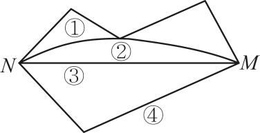
A．④ B．③ C．② D．①
【答案】B
【分析】本题考查的是两点之间，线段最短，根据两点之间，线段最短可得答案.
【详解】解：从居民楼点N到“菜鸟驿站”点M的最短路线是③.
故选：B
6．如图，线段 为线段
为线段 的中点，下列式子不正确的是（ ）
的中点，下列式子不正确的是（ ）
A． B．
B． C． D．
C． D．
【答案】D
【分析】本题考查了两点间的距离，根据题目的已知条件并结合图形进行分析是解题的关键．根据线段中点的定义可得
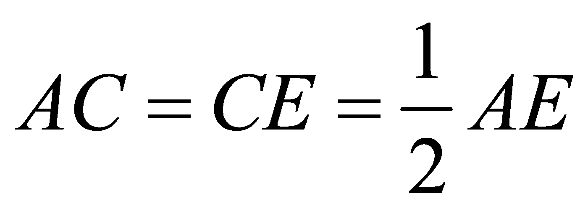
，再结合已知和等式的性质，逐一判断即可解答．【详解】解：A． 为线段的中点，
为线段的中点，
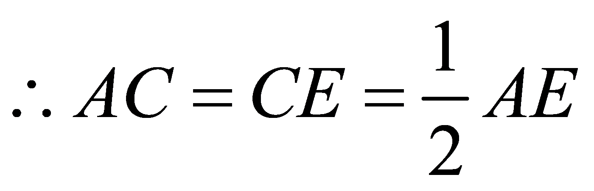
，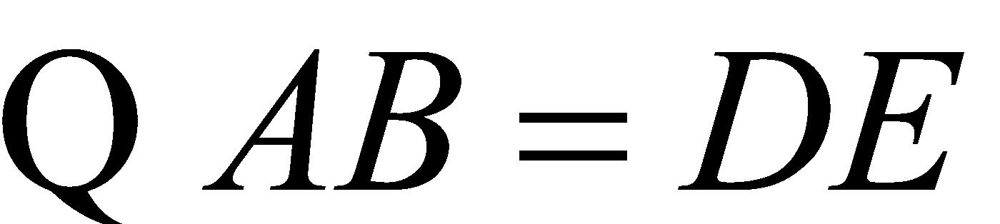
，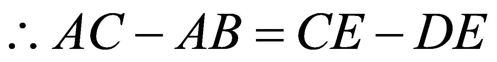
，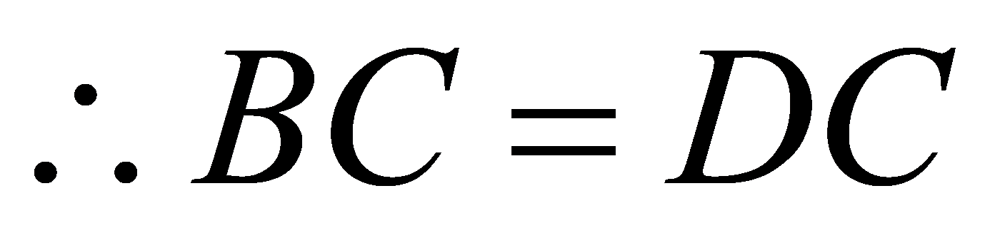
，故A不符合题意；B．
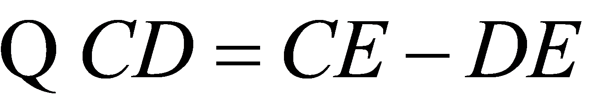
，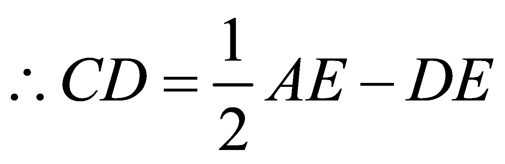
，故B不符合题意；C．
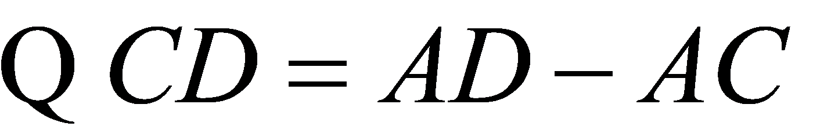
，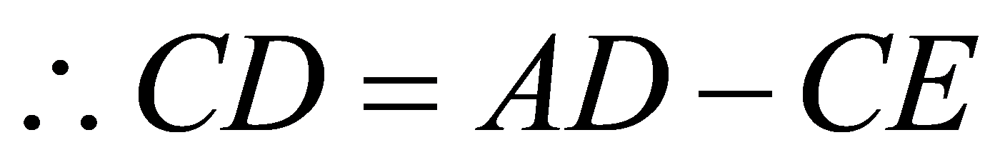
，故C不符合题意；D． 点
点 不是
不是 的中点，
的中点，
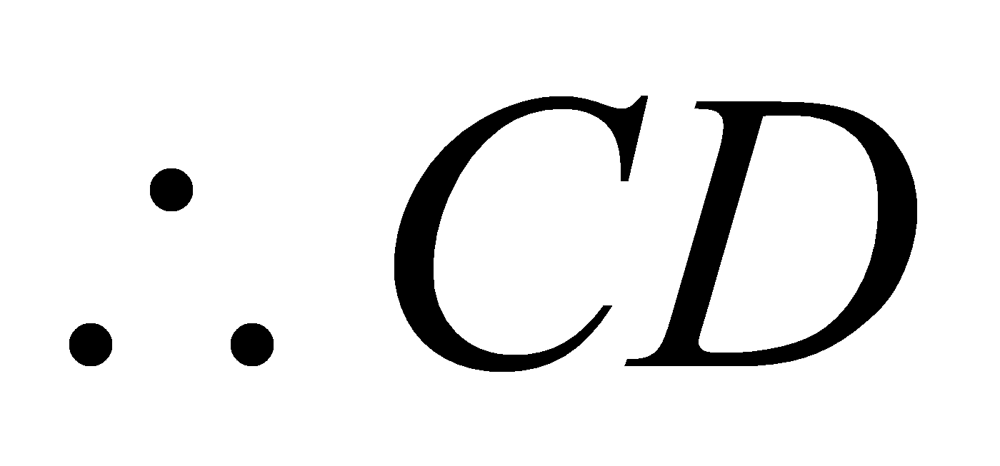
和 不一定相等，故选D符合题意；
不一定相等，故选D符合题意；故选：D．
7．下面是几个角的度数，不能用两个三角板拼合画出的角是（ ）的角
A．
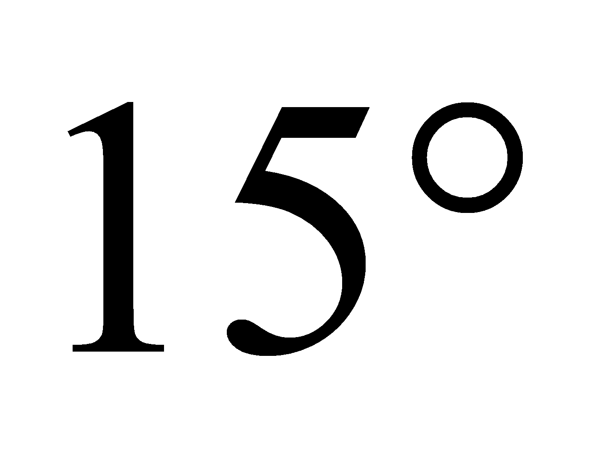
B． C．
C． D．
D．
【答案】D
【分析】本题考查了角的和差，熟练掌握三角板的所有度数的和或差是解题的关键．
找出能用三角板画出的角，利用排除法求解．
【详解】解：A、
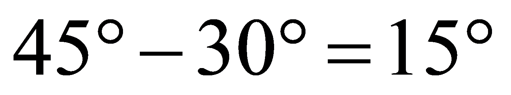
，故能画出；B、
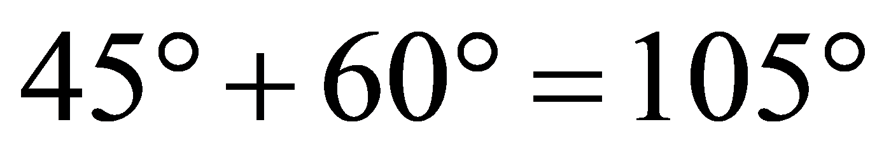
，故能画出C、
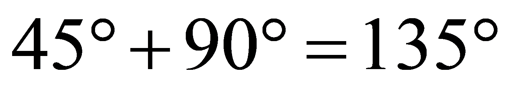
，故能画出；D、三角板中，没有两个角的和或差是，故不能画出．
故选：D．
8．如图，
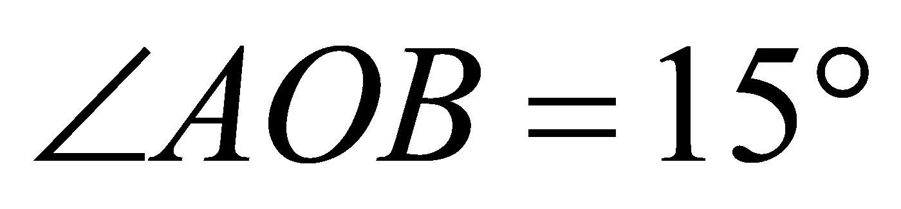
， ，点B，O， D在同一条直线上，则
，点B，O， D在同一条直线上，则 的度数是（ ）
的度数是（ ）
A． B．
B． C．
C． D．
D．
【答案】D
【分析】本题考查了几何图中角度的计算，先求出 ，再利用平角的定义计算即可得解，熟练掌握以上知识点并灵活运用是解此题的关键．
，再利用平角的定义计算即可得解，熟练掌握以上知识点并灵活运用是解此题的关键．
【详解】解：∵，，
∴
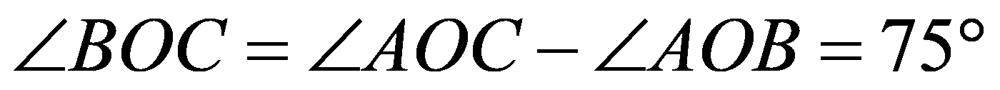
，∵点B，O， D在同一条直线上，
∴
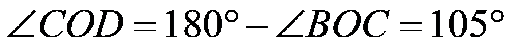
,故选：D．
9．如图，一艘轮船在大海中航行，在点 处发现灯塔
处发现灯塔 在北偏西
在北偏西 方向，灯塔
方向，灯塔 在南偏东
在南偏东 的方向，则下列结论错误的是（ ）
的方向，则下列结论错误的是（ ）
A． 与
与 互为补角
互为补角
B． 平分
平分
C．图中以 为边的角有5个
为边的角有5个
D．
【答案】C
【分析】本题考查的是角的和差运算，方向角的含义，根据方向角的含义，结合角的和差运算逐一分析判断即可．
【详解】解：∵ ，
， ，
，
∴
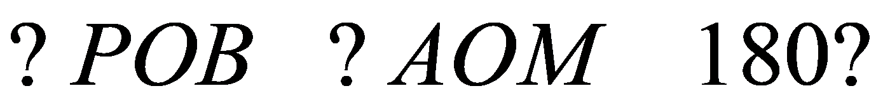
，∴与互为补角，故A不符合题意；
∵
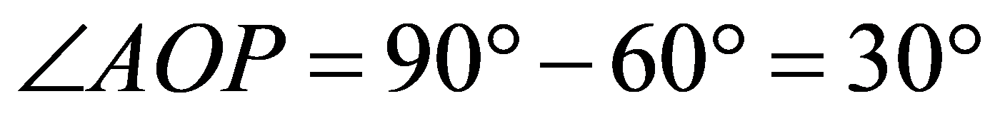
，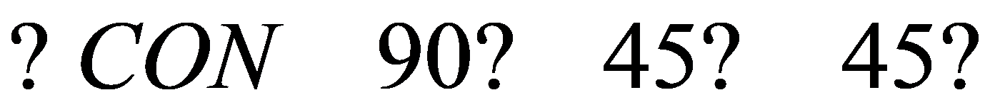
，∴
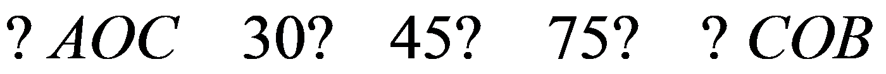
，∴平分，故B不符合题意；
∵以为边的角为：，
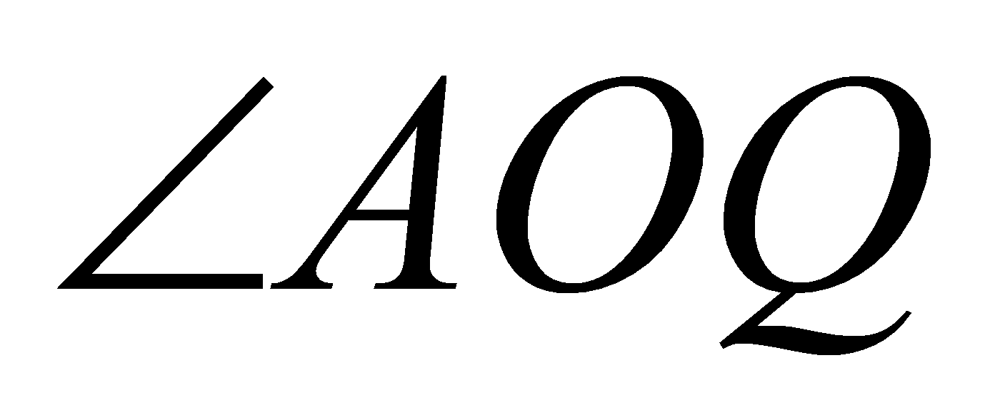
， ，
， ，
， ，，共6个，
，，共6个，∴C符合题意；
∵
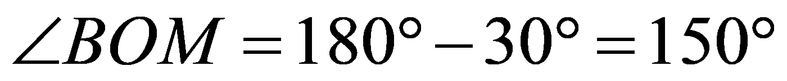
，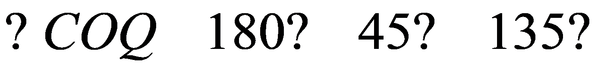
，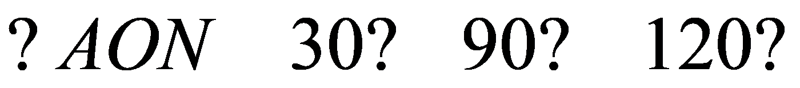
，∴．故D不符合题意．
故选：C
10．已知有理数a，b满足： ，如图，在数轴上，点O是原点，点A所对应的数是a，线段
，如图，在数轴上，点O是原点，点A所对应的数是a，线段 在直线上运动（点B在点C的左侧），
在直线上运动（点B在点C的左侧）， ．
．
下列结论：
①
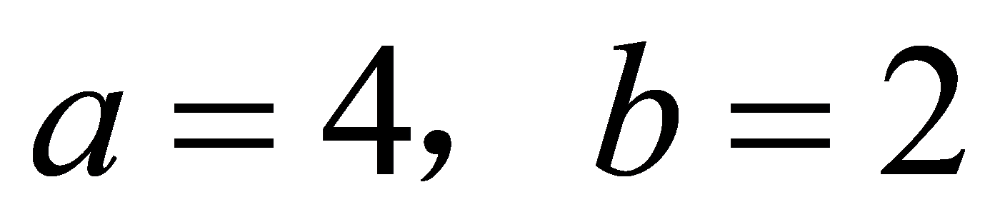
；②当点B与点O重合时， ；
；
③当点C与点A重合时，若点P是线段延长线上的点，则 ；
；
④在线段运动过程中，若M为线段 的中点，N为线段
的中点，N为线段 的中点，则线段
的中点，则线段 的长度不变．其中正确的是（ ）
的长度不变．其中正确的是（ ）
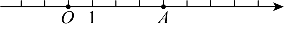
A．①③ B．①④ C．①②③④ D．①③④
【答案】D
【分析】本题考查绝对值，完全平方非负性，数轴上两点间距离等，根据以上知识解答即可．
【详解】解：∵，
∴
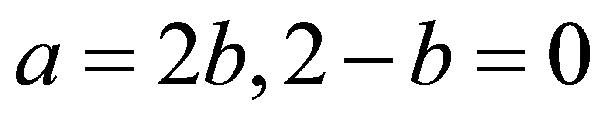
，解得：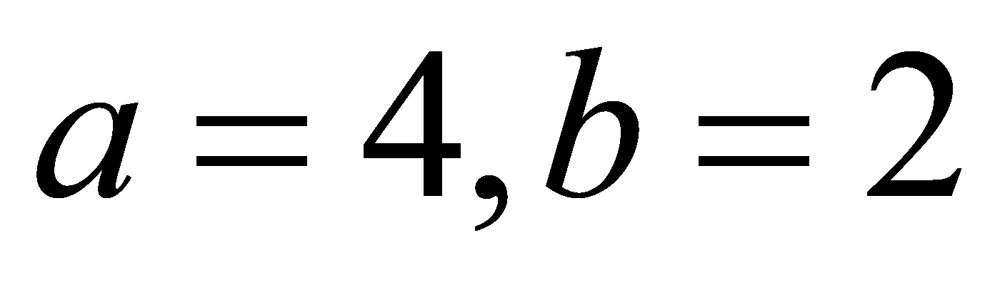
，即①正确，∵点O是原点，点A所对应的数是a，
∴点A所对应的数是4，
∵，
∴
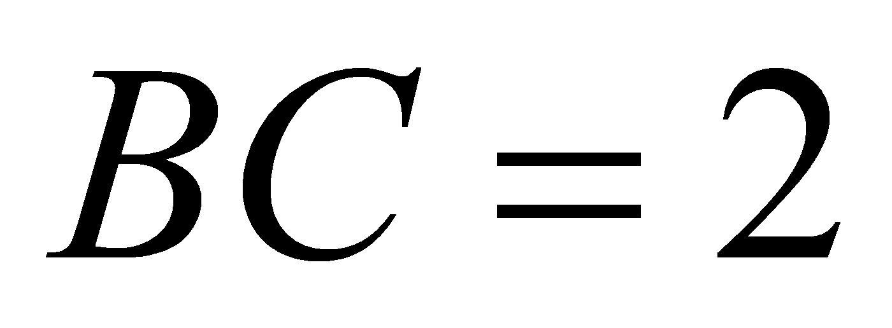
，∵当点B与点O重合时，
∴点表示的数为 ，
，
∵线段在直线上运动（点B在点C的左侧），
∴表示的数为 ，即
，即
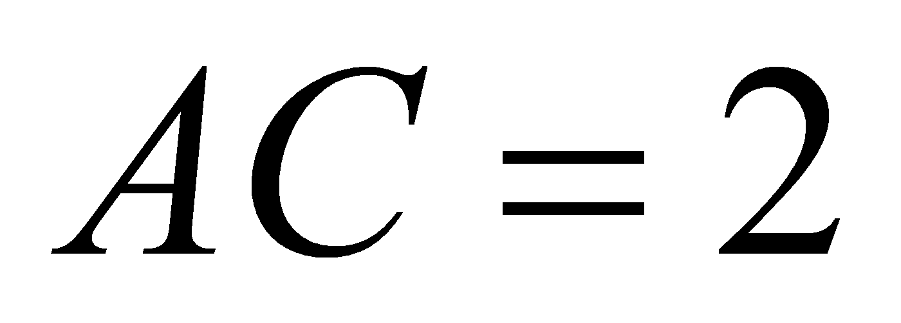
，即②不正确，∵当点C与点A重合时，
∴点表示的数为4，
∵点B在点C的左侧，，
∴点B表示的数为2，
∵点P是线段延长线上的点，
∴
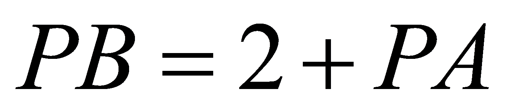
，，∴，即③正确；
∵M为线段的中点，N为线段的中点，
∴
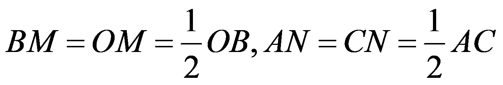
，分为四种情况：
第一种情况：当在左侧时，如图：
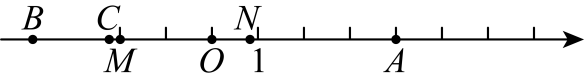
，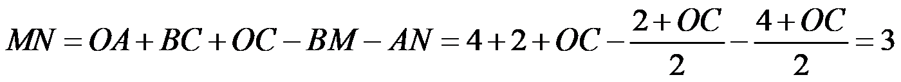
；第二种情况：当、在两侧时，如图：
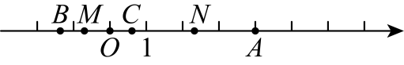
，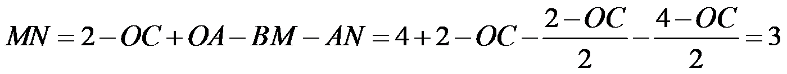
；第三种情况：当、在线段上时，如图：
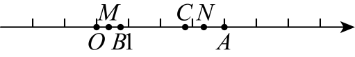
，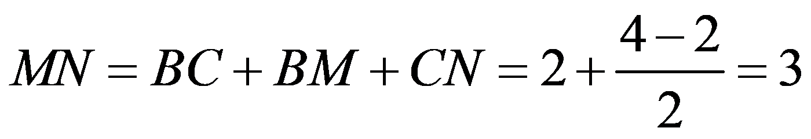
；第四种情况：当和都在右边时，如图：
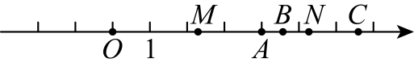
，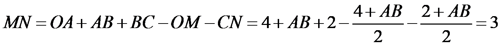
，∴在线段运动过程中，若M为线段的中点，N为线段的中点，则线段的长度不变，即④正确，
故选：D．
二、填空题（本大题共6小题，每小题3分，共18分）
11．六边形对角线的条数是 ．
【答案】
【分析】本题考查了多边形对角线条数的知识，熟练掌握以上知识是解题的关键．
根据多边形所有对角线的条数公式 求解即可．
求解即可．
【详解】解：根据多边形所有对角线的条数为，
∴六边形的对角线的条数为
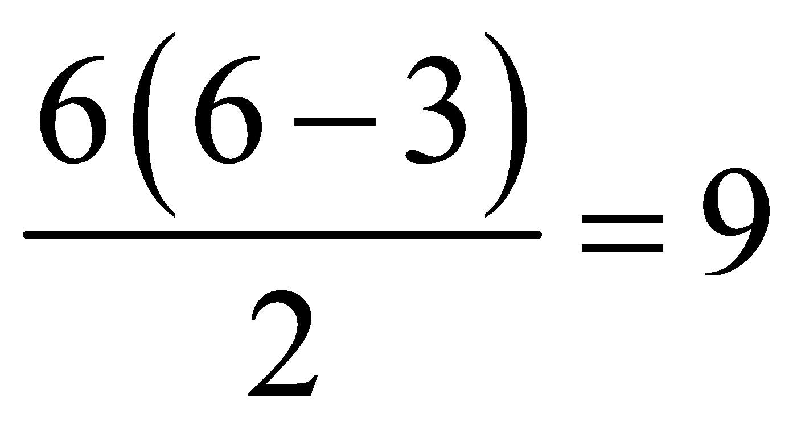
．故答案为：．
12．


 ；
； 
【答案】 35 9 0 12.26
【分析】根据度分秒的进制，根据， 进行计算即可解答．
进行计算即可解答．
【详解】解： ，
，
， ，
，
，
故答案为：35，9，0，12.26．
13．如图，一副直角三角板的顶点重合在一起，若 ，则
，则 的度数为 ．
的度数为 ．

【答案】
【分析】本题考查了角的计算，掌握角的和差计算是解题的关键．
由题意可知， ，则，，即
，则，，即 ①，
①， ②，再根据，可得
②，再根据，可得 ，代入②可得：③，①
，代入②可得：③，① ③可得：
③可得： ，即可得出
，即可得出 的度数，进而得出答案．
的度数，进而得出答案．
【详解】解：一副三角板的顶点重合在一起，
．
 ，，
，，
 ①，②，
①，②，
，
，
③，
①③，得，
，
 ．
．
故答案为：．
14．的《我爱发明》栏目，每周一至周五的播出时间是，此时钟表的时针与分针的夹角为 ．
【答案】
【分析】本题考查了钟面角，准确熟练地进行计算是解题的关键．根据时钟上一大格是，时针1分钟转 进行计算，即可解答．
进行计算，即可解答．
【详解】解：由题意得：
，
 此时钟表的时针与分针的夹角为，
此时钟表的时针与分针的夹角为，
故答案为：．
15．已知 ，画射线
，画射线 ，使
，使 ，
， 平分，
平分， 平分
平分 ，则
，则 ．
．
【答案】或
【分析】本题主要考查了几何图形中角度的计算，角平分线的定义，分射线在外，射线在内，两种情况分别求解即可.
【详解】解：当射线在内时，如图1，
∵，，
∴，，
∵平分，平分，
∴，，
∴.
当射线在外时，如图2，
∵，，
∴，，
∵平分，平分，
∴，，
∴.
综上所述：或
故答案为：或．
16．已知点P是射线上一点，当或时，称点P是射线的强弱点，若 ，则
，则 ．
．
【答案】3或6或18．
【分析】本题考查的是线段的和差倍分关系，有理数的乘法运算，分类思想的运用，掌握线段的和差倍分是解题的关键．
分三种情况讨论，分别画出符合题意的图形，结合P的位置得到的具体的数量关系，结合，从而可得答案．
【详解】解： ①当，时，如图
∴；
②当，时，如图
∴；
③当，时，如图
∴．
综上所述， 的长为3或6或18．
的长为3或6或18．
故答案为：3或6或18．
三、解答题（第17，18，19，20题，每题6分；第21，22，23题，每题8分；第24，25题，每题12分；共9小题，共72分）
17．计算：
(1)； (2)
【答案】(1)
(2)
【分析】本题考查以度、分、秒为单位的角的度量；掌握度、分、秒是60进制是解题关键．
（1）根据，计算求值；
（2）先算乘法，再根据，计算求值
【详解】（1）解：
；
（2）解：
18．如图，点B是线段上一点，且 ．
．

(1)图中共有 条线段；
(2)试求出线段的长；
(3)如果点O是线段的中点，请求线段的长．
【答案】(1)6
(2)26
(3)7
【分析】本题考查了线段的识别与计算，解题关键是准确识图，明确线段之间的和差关系，正确进行计算；
（1）数出所有线段即可；
（2）根据求解即可，
（3）先求出，再根据线段和差求解即可．
【详解】（1）解：图中共有六条线段，
故答案为：6．
（2）解：∵，
∴．
（3）解：∵点O是的中点，
∴，
∴．
19．如图所示，点B，D，C，F在同一条直线上．

(1)图中哪个角可以用一个大写字母来表示？
(2)以A为顶点的角有几个？请表示出来．
(3)与是同一个角吗？请说明理由．
【答案】(1)图中可以用一个大写字母表示的角是．
(2)以A为顶点的角有3个，分别是．
(3)与不是同一个角．理由：这两个角的顶点不同．
【分析】此题考查了角和角的表示，熟练掌握角的表示方法是关键．
（1）根据角的表示方法解答即可；
（2）根据角的表示方法解答即可；
（3）根据角的表示方法解答即可．
【详解】（1）解：图中可以用一个大写字母表示的角是．
（2）以A为顶点的角有3个，分别是．
（3）与不是同一个角．理由：这两个角的顶点不同
20．如图，直线经过点O，平分，平分 ，若，．
，若，．

(1)求 的度数．
的度数．
(2)判断 与
与 的位置关系，并说明理由．
的位置关系，并说明理由．
【答案】(1)
(2)，见解析
【分析】本题考查的是角平分线的定义，角的和差计算，熟知从一个角的顶点出发，把这个角分成相等的两个角的射线叫做这个角的平分线是解答此题的关键．
（1）由求出 的度数，根据角平分线的定义得出的度数，求出，进而求解即可；
的度数，根据角平分线的定义得出的度数，求出，进而求解即可；
（2）首先由角平分线的定义得出 的度数，根据平角的定义与角的和差即可得出结论．
的度数，根据平角的定义与角的和差即可得出结论．
【详解】（1）解：∵，
∴，
∵平分，
∴，
∵，
∴，
∴；
（2）解：，理由如下：
∵平分，
∴
∴
∴．
21．如图，平面上有五个点 ．按下列要求画出图形．
．按下列要求画出图形．

(1)连接 ；
；
(2)画直线交于点M；
(3)画射线 ；
；
(4)请在平面上找一点O，使它与点B，C，D，E的距离之和最小（保留作图痕迹）．
【答案】(1)见解析
(2)见解析
(3)见解析
(4)见解析
【分析】本题考查了基本的几何作图，包括连线、直线、射线的画法，以及“两点之间，线段最短”这一性质，正确理解题意并作图是解决本题的关键．
（1）根据连线的画法作图即可；
（2）根据直线的画法作图即可；
（3）根据射线的画法作图即可；
（4）根据“两点之间，线段最短”这一性质作图即可．
【详解】（1）解：作图如下：
（2）解：作图如下：
（3）解：作图如下：

（4）解：连接，
∵使它与点B，C，D，E的距离之和最小，
则 ，
， ，
，
∴与的交点O可使它与点B，C，D，E的距离之和最小，
作图如下：

22．综合与实践
学习完《平行线的证明》，我们积累了一定的研究经验，李凯和张芳将一副透明三角板中的两个直角三角尺的直角顶点按如图所示的方式叠放在一起，其中， ，
， ．
．
(1)操作判断
若，则 ______；若，则
______；若，则 ______；
______；
(2)性质探究
由（1）猜想 与的数量关系，并证明你的猜想；
与的数量关系，并证明你的猜想；
【答案】(1)，
(2)，证明见解析
【分析】本题考查了叠放三角板中的角的计算．熟练掌握三角板性质，余角补角定义和性质，旋转性质，平行线性质，是解题的关键．
（1）先根据直角三角板的性质求出，进而可得、的度数；
（2）根据（1）中的结论可提出猜想，再由，论证即可；
【详解】（1）解：∵，
∴，
若，
则；
若，
则．
故答案为：，．
（2）解：．证明如下：
∵，
∴．
23．已知，分别为线段上的点，
(1)如图 ，当
，当 时，试说明
时，试说明 ；
；
(2)当时， 分别为中点，且，，求的长．
分别为中点，且，，求的长．
【答案】(1)说明见解析
(2)或
【分析】（）由线段中点的定义可得 ，再根据线段的和差关系可得，，两式相加即可求证；
，再根据线段的和差关系可得，，两式相加即可求证；
（）设，则 ，，分点在点右侧和点在点左侧两种情况，分别画出图形，利用线段中点定义解答即可求解；
，，分点在点右侧和点在点左侧两种情况，分别画出图形，利用线段中点定义解答即可求解；
本题考查了线段的中点 ，线段的和差，运用分类讨论思想解答是解题的关键．
【详解】（1）解：∵，
∴，
∵，，
∴，
即；
（2）解：设，则，，
当点在点右侧时，如图，
则，
∴，
∵分别为中点，
∴，，
∴，
∴ ，
，
∴；
当点在点左侧时，如图，
则，
∴，
∵分别为中点，
∴，，
∴，
∴ ，
，
∴；
综上，的长为或．
24．如图，点O为直线上一点，过点O作射线，使．将一直角三角板的直角顶点放在点O处，一直角边 在射线上，另一直角边在直线的下方，
在射线上，另一直角边在直线的下方，
(1)将图①中三角板绕点O逆时针方向旋转至图②，使边在 内部，且恰好平分，求大小；
内部，且恰好平分，求大小；
(2)将图①中的三角板绕点O逆时针方向旋转至图③．
①如果恰好是的角平分线，则的度数为______；
②如果始终在的内部，的度数不会变化，请猜测出的度数并说明理由．
【答案】(1)
(2)①；②，理由见解析
【分析】本题主要考查了角的和差运算的应用，角平分线的性质等知识点，熟练掌握其性质，结合图形，用所求的角表示未知的角是解决此题的关键．
（1）平分，可求得 ，再由互余关系即可求得结果；
，再由互余关系即可求得结果；
（2）①首先求出，然后由角平分线得到，进而利用角的和差求解即可；
②由且，即可得出两角的关系；
【详解】（1）解：∵平分， ，
，
；
（2）解：①∵
∴
∵恰好是的角平分线
∴
∴
∴；
②，理由如下，
∵ ，
∴，
，，
，
，
即与 的数量关系为：．
的数量关系为：．
25．如图1和图2，数轴 与
与 交于公共原点O，点M，N在数轴上且表示的数分别为2和
交于公共原点O，点M，N在数轴上且表示的数分别为2和 ，点P在数轴上，且
，点P在数轴上，且 ．初始状态下
．初始状态下 ．
．
(1)如图1，若线段中点为A，求点A在数轴上表示的数；
(2)如图1，若点P在数轴上表示的数是4，将数轴绕点O旋转过程中，当数轴经过点N时，直接写出点N在数轴上表示的数为多少？
(3)如图2，将 绕点O逆时针旋转
绕点O逆时针旋转 得到，将绕点O逆时针旋转得到
得到，将绕点O逆时针旋转得到 （其中
（其中 ）．在整个旋转过程中，当
）．在整个旋转过程中，当 被数轴或平分时，直接写出所有符合条件的
被数轴或平分时，直接写出所有符合条件的 值．
值．
【答案】(1)
(2) 或
或
(3)20或100或140
【分析】本题考查数轴，角平分线的定义，旋转的性质，掌握用数轴上的点表示数和角平分线的定义是解题的关键．
（1）根据中点的计算方法解题即可；
（2）根据题意可得数轴的单位长度是数轴的2倍，即可得到点N在数轴上表示的数；
（3）分三种情况分别画图，然后根据角平分线的定义列方程解题即可．
【详解】（1）解：∵线段中点为A，
∴点A在数轴 上表示的数为；
（2）解：∵，
点M在数轴上表示的数为，点P在数轴上表示的数是4，
∴数轴的单位长度是数轴的2倍，
∴点N在数轴上表示的数为或；
（3）解：如图，则被数轴平分时，
这时，，
则，解得：；
如图，被数轴平分时，
，解得：；
如图，当被数轴平分时，
这时，解得：；
综上所述，当被数轴或平分时，值为20或100或140．